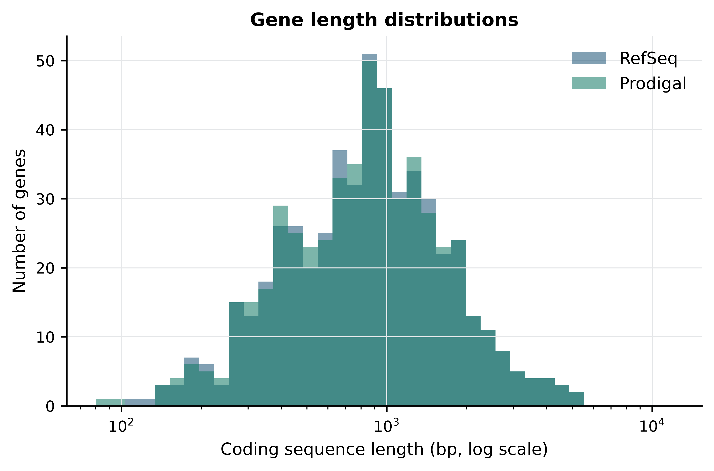
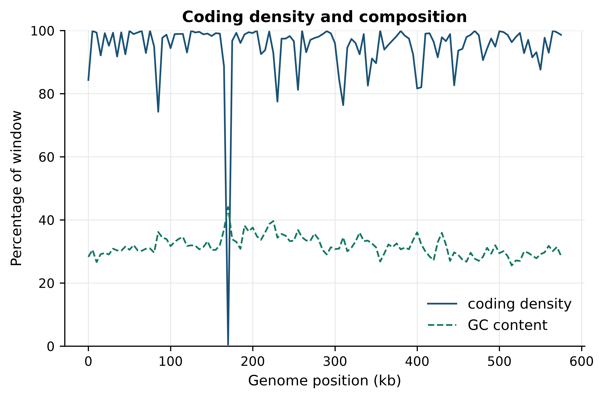
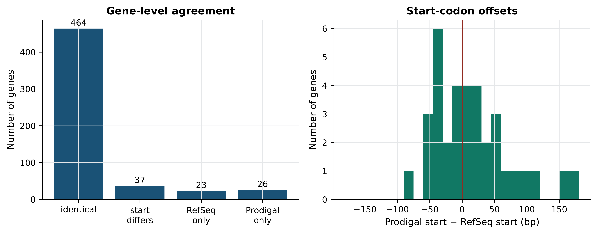

import sys; sys.path.insert(0, "..")
from pybfx import book_data, style
style()8 From assembled sequence to annotated genome
After working through this chapter you will be able to
- distinguish contigs, scaffolds and chromosomes, and explain why N50 alone is a poor summary of assembly quality
- compute length, base composition and coding density for an assembled genome before committing to an annotation
- run a prokaryotic gene finder and justify the genetic code and model options you chose
- compare two annotations of the same genome and classify their disagreements as gene-level or boundary-level
- explain why eukaryotic gene prediction needs external evidence that prokaryotic prediction does not
- parse GFF3 column by column, including the attributes column and parent/child relationships, without mis-handling coordinates
- judge whether a functional assignment is supported by evidence or inherited from a previous guess
An assembler hands you a FASTA file. That file is a hypothesis about the order of bases in an organism’s genome, and nothing more: it contains no genes, no operons, no promoters and no names. Annotation is the process of turning that string of letters into a set of claims about biology — this region is transcribed, that one encodes a protein, this protein probably hydrolyses ATP — each of which can be right, wrong, or right for the wrong reason. The claims are what everyone downstream will actually use. A differential expression analysis counts reads against annotated gene models; a variant effect predictor decides whether a substitution is synonymous by consulting annotated reading frames; a pathway enrichment test inherits every functional label the annotator assigned. Errors introduced here do not stay here.
This chapter works through annotation on a genome small enough to hold in your head and real enough to behave badly: Mycoplasmoides genitalium G37 (Fraser et al. 1995), bundled as data/sequences/mycoplasma-genitalium-NC_000908.2.fasta. At 580 kb it is among the smallest genomes of any free-living organism, which means it can be annotated completely in under a second on a laptop and its annotation can be checked by hand. Alongside it sits the current RefSeq annotation, data/annotation/mycoplasma-genitalium.gff, produced by a curated pipeline. You will measure the genome, predict its genes yourself with Prodigal, and then compare your predictions with RefSeq’s — not to decide who is right, but to learn what the disagreements between two competent annotations look like and where they come from.
By the end you will have produced a gene set, quantified its agreement with a reference annotation at both the gene level and the start-codon level, measured coding density along the chromosome, and dissected the GFF3 file format closely enough that you can debug one when a downstream tool refuses to read it. The habits that matter are smaller than any of that: check the genome before you annotate it, record which evidence supports which claim, and never let an inherited label masquerade as a measurement.
8.1 Setting up
8.2 Judging an assembly before you annotate it
An assembler takes reads and reports contigs: contiguous stretches of sequence that the evidence supports without interruption. If paired-end or long-range linking information is available, contigs can be ordered and oriented into scaffolds, in which the gaps of unknown sequence between contigs are represented by runs of N. A scaffold is therefore a weaker claim than a contig — it asserts adjacency and approximate distance, not sequence. Only when scaffolds are placed on a genetic or physical map, or assembled telomere to telomere, do they become chromosomes (Nurk et al. 2022). Short-read assemblers such as SPAdes (Bankevich et al. 2012) fragment at repeats longer than the read pairs can span; long-read assemblers such as Canu (Koren et al. 2016) and Flye (Kolmogorov et al. 2018) resolve most of those repeats but inherit the higher per-base error of the underlying chemistry.
The statistic you will see quoted first is almost always N50: the length of the contig such that contigs of that length or longer contain at least half of the assembly’s total bases. It is a weighted median, and that is exactly its weakness.
def n50(lengths):
"""Length of the contig at which half the assembly's bases are reached."""
ordered = sorted(lengths, reverse=True)
half = sum(ordered) / 2
running = 0
for length in ordered:
running += length
if running >= half:
return length
raise ValueError("empty assembly")
careful = [900_000, 800_000, 700_000, 600_000, 500_000] + [1_000] * 500
reckless = [2_500_000] + [1_000] * 1_500
print(f"careful : {len(careful):4d} contigs, {sum(careful):,} bp, N50 = {n50(careful):,}")
#> careful : 505 contigs, 4,000,000 bp, N50 = 700,000
print(f"reckless: {len(reckless):4d} contigs, {sum(reckless):,} bp, N50 = {n50(reckless):,}")
#> reckless: 1501 contigs, 4,000,000 bp, N50 = 2,500,000Both assemblies have the same total length. The second has a much larger N50 and is much worse: it was produced by an assembler that resolved an ambiguity aggressively and fused regions that the data did not justify joining. N50 rewards exactly that behaviour, because it measures contiguity and says nothing about correctness. It is also not comparable between assemblies of different total size, which is why NG50, computed against an expected genome size rather than the assembled total, is preferred when a reference size is known. QUAST (Gurevich et al. 2013) reports both, along with misassembly counts when a reference is available.
Two further checks matter more than contiguity. Completeness is usually estimated with BUSCO (Manni et al. 2021), which searches the assembly for a lineage-specific set of genes present in single copy in nearly all members of that lineage and reports each as complete, duplicated, fragmented or missing. A high fragmented count points at an under-assembled or error-rich draft; a high duplicated count points at uncollapsed haplotypes or genuine polyploidy. Contamination is the other check: Kraken 2 (Wood, Lu, and Langmead 2019) classifies contigs taxonomically, and contigs whose taxonomy disagrees with the rest of the assembly are candidates for removal. Annotating a contaminated assembly produces genes that are real but belong to the wrong organism, and they propagate into every database that mirrors your submission.
Three numbers before you annotate
Record total length, number of contigs and BUSCO completeness in your laboratory notebook before the annotation step, and again after. If the gene count surprises you later, these three numbers tell you immediately whether to suspect the assembly or the gene finder.
8.3 Measuring the genome in hand
The bundled M. genitalium assembly is a finished, circular, single-contig genome, so contiguity statistics are trivial: N50 equals the genome length. What is worth measuring is composition, because composition constrains everything that follows.
from collections import Counter
from Bio import SeqIO
record = SeqIO.read(book_data("sequences", "mycoplasma-genitalium-NC_000908.2.fasta"),
"fasta")
genome = str(record.seq).upper()
counts = Counter(genome)
gc_percent = 100 * (counts["G"] + counts["C"]) / len(genome)
print(f"{record.id}: {len(genome):,} bp")
#> NC_000908.2: 580,076 bp
print(f"A={counts['A']:,} C={counts['C']:,} G={counts['G']:,} T={counts['T']:,}")
#> A=200,544 C=91,515 G=92,306 T=195,711
print(f"ambiguous bases: {len(genome) - sum(counts[b] for b in 'ACGT')}")
#> ambiguous bases: 0
print(f"GC content: {gc_percent:.2f}%")
#> GC content: 31.69%Three things follow from that output. There are no ambiguous bases, so this is a finished sequence rather than a draft with gaps. The GC content of 31.69% is low, which matters for gene finding because codon usage and start-codon preference both shift with composition, and because a naive open-reading-frame scan in an AT-rich genome produces more spurious long ORFs by chance. And at 580,076 bp the genome is small enough that an exhaustive six-frame analysis costs nothing.
M. genitalium belongs to the Mollicutes, which use genetic code 4: the codon TGA encodes tryptophan rather than termination. Getting this wrong is not a subtlety. Under the bacterial default, code 11, every internal TGA is read as a stop, and genes are chopped into fragments.
The genetic code is a parameter, not a default
Translation tables differ between bacterial clades, between nuclear and mitochondrial genomes, and between some ciliates and everything else. A gene finder run with the wrong table does not fail — it returns a plausible-looking answer with roughly twice as many, roughly half as long, genes. You will see this quantified in Section 8.4. Always look up the translation table for your organism before the first run, and record it in your methods.
Repeats and why masking comes first
A repeat is a sequence that occurs in multiple copies in a genome: tandem satellite arrays, transposable elements, segmental duplications, and the dispersed families such as Alu and LINE-1 that between them cover roughly half of the human genome (Lander et al. 2001). Repeats cause two separate problems. They break assemblies, as described above. And they wreck gene prediction, because a transposon carries its own open reading frames, its own splice-site-like motifs and its own promoters; an unmasked eukaryotic genome yields thousands of predicted “genes” that are transposase fragments.
Masking marks repetitive regions so that downstream tools can ignore or down-weight them. Hard masking replaces the bases with N, soft masking lower-cases them, and soft masking is almost always the right choice because it preserves the sequence for any tool that wants it while letting repeat-aware tools skip it. Prokaryotic genomes are repeat-poor enough — M. genitalium has no large repeat families — that masking is usually skipped, which is one of several reasons bacterial annotation is easier.
8.4 Finding genes in a compact bacterial genome
Bacterial protein-coding genes are, with rare exceptions, uninterrupted: one start codon, one reading frame, one stop codon. That makes the search space finite. A gene finder enumerates every open reading frame (ORF) — every stretch from a potential start codon to the next in-frame stop — and then has to decide which ORFs are real and, for each real one, which of several possible start codons the ribosome actually uses.
Prodigal (Hyatt et al. 2010) makes both decisions with models it trains on the genome itself, which is why it needs no reference database. It first builds a coding model from the hexamer composition of long, unambiguous ORFs, so that a candidate’s coding score reflects how closely its codon statistics resemble the genome’s own genes. It then examines the region immediately upstream of each candidate start and learns the translation initiation signal: in most bacteria a Shine–Dalgarno ribosome-binding site, a purine-rich motif such as AGGAGG positioned 5–10 bp before the start codon and complementary to the 3’ end of the 16S rRNA. Where no Shine–Dalgarno signal is detectable, Prodigal switches to a generic upstream motif model. The final start call combines coding score, upstream motif score and start-codon type.
Prodigal is an external binary, but it is pinned in the book’s environment.yml and runs on this genome in well under a second, so the chapter runs it for real rather than quoting a stored result. The command-line form is the one you would type:
prodigal -i data/sequences/mycoplasma-genitalium-NC_000908.2.fasta \
-o mgen_prodigal.gff -f gff -a mgen_prodigal.faa -g 4-f gff asks for GFF output rather than Prodigal’s default GenBank-like format, -a writes the translated proteins, and -g 4 selects the genetic code. The same command is issued below from Python so that its output feeds the rest of the chapter.
import subprocess, tempfile, shutil, os
if shutil.which("prodigal") is None:
raise RuntimeError("prodigal is not on PATH; install the book environment first")
workdir = tempfile.mkdtemp(prefix="mgen_annotation_")
fasta = book_data("sequences", "mycoplasma-genitalium-NC_000908.2.fasta")
def run_prodigal(table):
"""Predict genes with the given translation table; return the GFF path."""
out = os.path.join(workdir, f"prodigal_table{table}.gff")
subprocess.run(["prodigal", "-i", fasta, "-o", out, "-f", "gff",
"-g", str(table), "-q"], check=True)
return out
gff_code4 = run_prodigal(4)
gff_code11 = run_prodigal(11)The two runs differ only in the translation table, and that single parameter changes the answer completely.
def count_cds(path):
with open(path) as handle:
return sum(1 for line in handle if not line.startswith("#") and line.strip())
print(f"genetic code 4 (Mollicutes): {count_cds(gff_code4):4d} predicted CDS")
#> genetic code 4 (Mollicutes): 527 predicted CDS
print(f"genetic code 11 (bacterial default): {count_cds(gff_code11):4d} predicted CDS")
#> genetic code 11 (bacterial default): 995 predicted CDSNearly twice as many genes, because every internal TGA tryptophan codon terminated a reading frame prematurely and the true gene was reported as two or three fragments. Nothing in the output flags the problem; the GFF is well-formed and the proteins are translatable. Only the biology is wrong. The rest of the chapter uses the code-4 predictions.
def parse_gff(path):
"""Yield one dictionary per GFF3 feature line, attributes already split."""
features = []
with open(path) as handle:
for line in handle:
if line.startswith("#") or not line.strip():
continue
fields = line.rstrip("\n").split("\t")
if len(fields) != 9:
continue
attributes = dict(pair.split("=", 1)
for pair in fields[8].rstrip(";").split(";")
if "=" in pair)
features.append({"seqid": fields[0], "source": fields[1],
"type": fields[2], "start": int(fields[3]),
"end": int(fields[4]), "score": fields[5],
"strand": fields[6], "phase": fields[7],
"attributes": attributes})
return features
predicted = parse_gff(gff_code4)
print(f"{len(predicted)} predicted CDS features")
#> 527 predicted CDS features
print(Counter(feature["attributes"]["start_type"] for feature in predicted))
#> Counter({'ATG': 458, 'GTG': 50, 'TTG': 19})The start-codon distribution is itself informative: ATG dominates, but GTG and TTG together account for a substantial minority. A gene finder that only considered ATG would truncate every one of those genes at the first internal ATG, shortening the protein and shifting the annotated promoter region.
8.5 Comparing two annotations of the same genome
The RefSeq annotation of this genome was produced by the NCBI Prokaryotic Genome Annotation Pipeline (Tatusova et al. 2016), which combines ab initio prediction with protein homology evidence and curated rules. It is a useful comparator precisely because it was built differently from the Prodigal run.
reference = parse_gff(book_data("annotation", "mycoplasma-genitalium.gff"))
print(Counter(feature["type"] for feature in reference).most_common())
#> [('gene', 546), ('CDS', 524), ('exon', 42), ('tRNA', 36), ('pseudogene', 20), ('rRNA', 3), ('region', 1), ('SRP_RNA', 1), ('RNase_P_RNA', 1), ('tmRNA', 1)]Count the feature types before anything else. There are 546 gene features but only 524 CDS features, and 20 pseudogene features; the difference is made up of the tRNA, rRNA and other structural RNA genes, which have a gene parent but no CDS child. Conflating “number of gene lines” with “number of proteins” is the single most common arithmetic error in annotation summaries.
The right way to ask whether two annotations agree is to match genes by their stop codon, not their start. The stop is determined by the reading frame and is rarely ambiguous; the start is a prediction in its own right. On the plus strand the stop is at the feature’s end coordinate, on the minus strand at its start.
reference_cds = [f for f in reference if f["type"] == "CDS"]
def stop_key(feature):
"""Strand plus the coordinate of the 3' end: a frame-anchored gene identity."""
return (feature["strand"],
feature["end"] if feature["strand"] == "+" else feature["start"])
reference_by_stop = {stop_key(f): f for f in reference_cds}
predicted_by_stop = {stop_key(f): f for f in predicted}
shared = set(reference_by_stop) & set(predicted_by_stop)
print(f"RefSeq CDS : {len(reference_cds)}")
#> RefSeq CDS : 524
print(f"Prodigal CDS : {len(predicted)}")
#> Prodigal CDS : 527
print(f"shared 3' ends : {len(shared)}")
#> shared 3' ends : 501
print(f"RefSeq only : {len(set(reference_by_stop) - set(predicted_by_stop))}")
#> RefSeq only : 23
print(f"Prodigal only : {len(set(predicted_by_stop) - set(reference_by_stop))}")
#> Prodigal only : 26Of 524 RefSeq coding sequences and 527 Prodigal predictions, 501 share a 3’ end. That is roughly 95% gene-level agreement between an evidence-informed curated pipeline and a database-free ab initio run, which is the usual state of affairs for a compact bacterial genome and should not be extrapolated to anything larger or more repetitive.
The 23 RefSeq-only features are the more interesting side of the disagreement.
reference_only = set(reference_by_stop) - set(predicted_by_stop)
pseudo = [key for key in reference_only
if reference_by_stop[key]["attributes"].get("pseudo") == "true"]
print(f"{len(pseudo)} of {len(reference_only)} RefSeq-only features are pseudogenes")
#> 19 of 23 RefSeq-only features are pseudogenes
for key in sorted(pseudo)[:3]:
attributes = reference_by_stop[key]["attributes"]
print(" -", attributes.get("product"), "|", attributes.get("Note"))
#> - hypothetical protein | incomplete%3B partial in the middle of a contig%3B missing N-terminus and C-terminus
#> - adhesin P1 | incomplete%3B partial in the middle of a contig%3B missing N-terminus and C-terminus
#> - adhesin | incomplete%3B partial in the middle of a contig%3B missing N-terminus and C-terminusNineteen of the 23 are annotated pseudogenes: genes that homology evidence shows were once functional but that now carry a frameshift or an internal stop. RefSeq records them because a reader needs to know the locus exists and is broken. Prodigal does not report them because they are not open reading frames. Neither behaviour is a bug; they answer different questions. Five of these RefSeq CDS features have a length that is not a multiple of three, which is a deliberate signal that the feature spans a frameshift and must not be naively translated.
Boundary disagreements are the other, larger, class.
def start_offset(reference_feature, predicted_feature):
"""Signed distance from the RefSeq start to the Prodigal start, in bp."""
if reference_feature["strand"] == "+":
return predicted_feature["start"] - reference_feature["start"]
return reference_feature["end"] - predicted_feature["end"]
offsets = {key: start_offset(reference_by_stop[key], predicted_by_stop[key])
for key in shared}
identical = sum(1 for value in offsets.values() if value == 0)
print(f"identical at both ends: {identical} of {len(shared)}")
#> identical at both ends: 464 of 501
print(f"start-codon disagreements: {len(shared) - identical}")
#> start-codon disagreements: 37
in_frame = sum(1 for value in offsets.values() if value and value % 3 == 0)
print(f"of which in-frame (a different start in the same frame): {in_frame}")
#> of which in-frame (a different start in the same frame): 36Of the 501 genes both methods find, 464 agree on both coordinates exactly. Of the 37 that differ, 36 differ by a multiple of three: the two methods chose different start codons within the same reading frame. The single exception is a RefSeq pseudogene annotated across a frameshift, whose CDS length is deliberately not a multiple of three. This is the classic boundary disagreement and it has a biological cause. Many bacterial genes have several in-frame candidate starts within the first 60 bp, the ribosome-binding signal is weak or absent, and the choice between them rests on a probabilistic model rather than on evidence. Two models trained on different data choose differently. The consequence is a protein that is a handful of residues longer or shorter at the N-terminus — usually harmless, occasionally fatal if the difference removes a signal peptide or a start-proximal catalytic residue.
Figure 8.1 shows what these two gene sets look like side by side.
import matplotlib.pyplot as plt
import numpy as np
reference_lengths = np.array([f["end"] - f["start"] + 1 for f in reference_cds])
predicted_lengths = np.array([f["end"] - f["start"] + 1 for f in predicted])
bins = np.logspace(np.log10(80), np.log10(12000), 40)
fig, ax = plt.subplots()
ax.hist(reference_lengths, bins=bins, alpha=0.55, label="RefSeq")
ax.hist(predicted_lengths, bins=bins, alpha=0.55, label="Prodigal")
ax.set_xscale("log")
ax.set_xlabel("Coding sequence length (bp, log scale)")
ax.set_ylabel("Number of genes")
ax.set_title("Gene length distributions")
ax.legend()
fig.tight_layout()
The distributions are close to identical, with a median near 855 bp in both cases, which corresponds to a protein of about 285 residues. The visible excess of short Prodigal features on the left is where 10 of the 26 Prodigal-only predictions sit: short ORFs with acceptable coding scores that the RefSeq pipeline rejected for lack of homology support. Short ab initio predictions in an AT-rich genome are the category that most often turns out to be noise, and also the category where genuine small proteins are most often missed. Neither annotation can settle the question without proteomic or ribosome-profiling evidence.
Figure 8.2 shows how densely those genes are packed along the chromosome.
coded = np.zeros(len(genome), dtype=bool)
for feature in reference_cds:
coded[feature["start"] - 1:feature["end"]] = True
window = 5000
edges = range(0, len(genome) - window, window)
density = [100 * coded[i:i + window].mean() for i in edges]
gc_window = [100 * (genome.count("G", i, i + window) + genome.count("C", i, i + window))
/ window for i in edges]
positions = [i / 1000 for i in edges]
fig, ax = plt.subplots()
ax.plot(positions, density, linewidth=1.2, label="coding density")
ax.plot(positions, gc_window, linewidth=1.2, linestyle="--", label="GC content")
ax.set_xlabel("Genome position (kb)")
ax.set_ylabel("Percentage of window")
ax.set_ylim(0, 100)
#> (0.0, 100.0)
ax.set_title("Coding density and composition")
ax.legend(loc="lower right")
fig.tight_layout()
The single conspicuous feature is the window beginning at 170 kb, where coding density collapses to 0.5%: that window holds the 16S, 23S and 5S ribosomal RNA genes, which are transcribed but not translated and therefore contribute no CDS. Across the whole chromosome, 94.64% of bases fall inside an annotated CDS, and 96.05% fall inside some annotated feature once the structural RNAs are included. That is extreme even for a bacterium, and it is a direct consequence of genome reduction: this organism has discarded almost everything that is not a gene. Two practical lessons follow. First, intergenic distance is a usable diagnostic here — 197 adjacent CDS pairs actually overlap, most commonly by 1, 8 or 11 bp, which is the signature of translationally coupled operons in which a stop codon and the next start codon share or nearly share bases. Second, a window of low coding density in a genome like this is worth investigating rather than ignoring; in a eukaryote it would be unremarkable.
Figure 8.3 summarises the comparison in the form you would put in a methods supplement.
fig, (left, right) = plt.subplots(1, 2, figsize=(9, 3.6))
categories = ["identical", "start\ndiffers", "RefSeq\nonly", "Prodigal\nonly"]
values = [identical, len(shared) - identical,
len(reference_only), len(set(predicted_by_stop) - set(reference_by_stop))]
left.bar(categories, values)
for index, value in enumerate(values):
left.text(index, value + 8, str(value), ha="center", fontsize=9)
left.set_ylabel("Number of genes")
left.set_title("Gene-level agreement")
differences = [value for value in offsets.values() if value != 0]
right.hist(differences, bins=np.arange(-180, 181, 15), color="#117864")
right.axvline(0, color="#922B21", linewidth=1)
right.set_xlabel("Prodigal start − RefSeq start (bp)")
right.set_ylabel("Number of genes")
right.set_title("Start-codon offsets")
fig.tight_layout()
The left panel is the summary a reviewer wants: 464 genes identical, 37 differing only in their start, 23 found only by RefSeq and 26 only by Prodigal. The right panel shows that the start disagreements are not a smooth distribution around zero but a set of discrete in-frame offsets, and that they are close to balanced in direction: Prodigal places its start upstream of RefSeq’s in 17 genes and downstream in 20. The disagreement is therefore not a systematic bias in one method but a genuine ambiguity in the data, resolved differently by a motif model and by an alignment to a homologous protein. Homology evidence is the more defensible tie-breaker, which is the single best argument for running an evidence-based pipeline such as Prokka (Seemann 2014) or PGAP rather than a bare gene finder.
8.6 Gene prediction in eukaryotes
Everything above depended on the assumption that a gene is one uninterrupted reading frame. In eukaryotes it is not, and every part of the problem becomes harder.
A eukaryotic protein-coding gene is transcribed as a pre-mRNA containing exons separated by introns that are spliced out. The spliceosome recognises short, degenerate signals: a GT at the intron’s 5’ end, an AG at its 3’ end, a branch point and a polypyrimidine tract. Those motifs are far too short to locate reliably on their own — a genome contains a GT every 16 bp by chance — so a predictor must combine them with coding-potential models on both sides and with constraints on intron length. Human introns range from under 100 bp to over a megabase, so the search space is enormous. Alternative splicing then means that the correct answer is not one gene model but several: the same locus can produce transcripts with different exon content, different reading frames and different protein products. A tool asked to report a single model per locus is being asked the wrong question.
Ab initio eukaryotic predictors such as AUGUSTUS (Stanke et al. 2006) use generalised hidden Markov models whose states correspond to the parts of a gene — intergenic, 5’ UTR, initial exon, intron, internal exon, terminal exon — and whose parameters must be trained on a set of known genes from a related species. Run on a novel genome with mis-matched training parameters, they produce gene sets whose counts can be wrong by a factor of two.
Modern practice is therefore evidence-based annotation: predictions are made in the presence of data that directly observes transcription. RNA-seq reads aligned with a spliced aligner give exon boundaries and splice junctions empirically — a junction supported by 200 reads is not a hypothesis — and full-length long-read cDNA gives complete models. Proteins from related species, aligned to the genome, confirm coding regions and reading frames. A combiner reconciles all three into a consensus gene set, so the annotation’s quality is bounded by the tissue coverage of the evidence: a gene expressed only in a developmental stage you did not sample will be annotated badly or not at all.
Annotation versions are not interchangeable
Ensembl (Cunningham et al. 2021) and RefSeq (Sayers et al. 2021) annotate the same human genome and do not produce identical gene models, and each changes between releases. Gene counts, exon boundaries and even the set of genes considered protein-coding move. Record the exact annotation release used in any analysis — Ensembl 110, RefSeq GCF_000001405.40-RS_2023_10 — because a count computed against one release cannot be compared with a count computed against another.
8.7 From a predicted protein to a biological function
Structural annotation says where the genes are. Functional annotation says what they do, and it is almost entirely an exercise in inference by similarity.
The simplest form is homology transfer: search the predicted protein against a curated database with BLAST (Altschul et al. 1990) or a more sensitive profile method, and copy the description of the best hit. This works when the hit is strong, nearly full length and to a protein whose function was experimentally determined. It fails in characteristic ways. Similarity over a shared domain does not imply shared overall function; a protein kinase domain tells you the protein phosphorylates something, not what. Enzymes in the same superfamily can differ in substrate. And best-hit transfer confuses orthologues — genes in different species that descend from a single ancestral gene via speciation, and usually do keep their function — with paralogues, which arose by duplication within a lineage and frequently diverge in function. Orthology-aware resources exist because the best BLAST hit is often a paralogue.
Domain annotation is more conservative and more durable. Pfam (Mistry et al. 2020) models protein families and domains as profile hidden Markov models built from curated seed alignments, and searching a protein against them with HMMER (Eddy 2011) reports which domains are present, in what order, and over which residues. InterPro (Paysan-Lafosse et al. 2022) integrates Pfam with a dozen other signature databases and maps the result onto Gene Ontology terms. A domain architecture is a statement about the protein’s parts and is far less likely to be wrong than a transferred description, which is why curated resources show domains and evidence rather than a single functional label.
Annotation errors propagate and compound
When a protein is annotated by copying the description of its best database hit, and that description was itself copied from an earlier best hit, the chain of inference can be many steps long and no step is recorded. A single mis-annotation in a well-populated family can be re-copied into hundreds of genomes within a few years, and the resulting consensus looks like independent corroboration. The defences are specific: prefer domain-level and orthology-based assignments to best-hit transfer; demand alignment coverage of at least 70–80% of both query and subject before transferring a description; treat a hit whose own annotation carries an electronic evidence code as a hypothesis, not a fact; and propagate the evidence alongside the label so the next person can re-evaluate it.
It is worth measuring how much of a well-studied proteome is still unexplained.
products = [f["attributes"].get("product", "") for f in reference_cds]
hypothetical = sum(1 for p in products if "hypothetical" in p)
duf = sum(1 for p in products if "DUF" in p)
print(f"hypothetical protein : {hypothetical}")
#> hypothetical protein : 27
print(f"domain of unknown function (DUF): {duf}")
#> domain of unknown function (DUF): 27
print(f"combined: {100 * (hypothetical + duf) / len(products):.1f}% of coding sequences")
#> combined: 10.3% of coding sequencesJust over 10% of the proteome of one of the most intensively studied minimal organisms is still unannotated after three decades of work on it. That is a useful calibration for how much of any new genome’s functional annotation is genuinely known.
Controlled vocabularies and evidence codes
Free-text product descriptions cannot be computed on: DNA polymerase III subunit beta, DNA pol III beta and beta clamp are the same thing to a reader and three different strings to a program. Controlled vocabularies solve this by assigning stable identifiers to concepts.
The Gene Ontology (Ashburner et al. 2000; Aleksander et al. 2023) is the most widely used. It provides three independent hierarchies — molecular function, biological process and cellular component — organised as a directed acyclic graph in which a term may have several parents and in which an annotation to a term implies annotation to all its ancestors. A gene annotated to GO:0003887 (DNA-directed DNA polymerase activity) is thereby also annotated to the broader nucleotidyltransferase and catalytic activity terms, which is what makes enrichment analysis possible. EC numbers provide a complementary four-level classification of enzymatic reactions (2.7.7.7 is DNA-directed DNA polymerase), and KEGG (Kanehisa 2000) maps gene products onto metabolic and signalling pathways.
Every GO annotation carries an evidence code stating how it was arrived at. EXP and its children mark experimental evidence; IDA is a direct assay; IMP is inference from a mutant phenotype; ISS is inference from sequence similarity, assigned by a curator; IEA is inferred from electronic annotation, assigned automatically with no curator review. The RefSeq GFF carries these in its go_function, go_process and go_component attributes.
evidence = Counter()
with_go = 0
for feature in reference_cds:
has_go = False
for key in ("go_function", "go_process", "go_component"):
if key in feature["attributes"]:
has_go = True
for item in feature["attributes"][key].split(","):
parts = item.split("|")
if len(parts) >= 4:
evidence[parts[3]] += 1
with_go += has_go
print(f"CDS with at least one GO term: {with_go} of {len(reference_cds)}")
#> CDS with at least one GO term: 331 of 524
print("evidence codes:", dict(evidence))
#> evidence codes: {'IEA': 985}Every one of the 985 GO annotations in this file carries the code IEA. Not one was reviewed by a curator for this organism. This is entirely normal — the overwhelming majority of GO annotations in any genome are IEA — but it changes how you should read an enrichment result. An enrichment of a GO term among your differentially expressed genes, computed against an IEA-only background, is a statement about which sequence features your gene set shares, filtered through a transfer pipeline. It is a hypothesis-generating observation, not evidence that the process is active.
Read the evidence code before the term
When a functional enrichment result surprises you, retrieve the evidence codes for the genes driving it. A term driven entirely by IEA annotations on hypothetical proteins is a different kind of finding from one driven by IDA annotations on characterised enzymes, and only the second justifies a confident claim in a discussion section.
8.8 The anatomy of GFF3 and GTF
Annotation is exchanged as tab-delimited feature tables, and almost every frustrating bug in a genomics pipeline is a misunderstanding of one of nine columns. A GFF3 line has exactly these fields, in order: seqid, source, type, start, end, score, strand, phase, attributes.
first_cds = next(f for f in reference if f["type"] == "CDS")
for name in ("seqid", "source", "type", "start", "end", "score", "strand", "phase"):
print(f"{name:8s} = {first_cds[name]}")
#> seqid = NC_000908.2
#> source = Protein Homology
#> type = CDS
#> start = 686
#> end = 1828
#> score = .
#> strand = +
#> phase = 0
for name in ("ID", "Parent", "gene", "product", "protein_id", "transl_table"):
print(f" attr {name:12s} = {first_cds['attributes'].get(name)}")
#> attr ID = cds-WP_009885562.1
#> attr Parent = gene-MG_RS00005
#> attr gene = dnaN
#> attr product = DNA polymerase III subunit beta
#> attr protein_id = WP_009885562.1
#> attr transl_table = 4seqid must match the FASTA identifier exactly, and the commonest cause of an empty result from a tool that takes both files is a mismatch between NC_000908.2 here and NC_000908 or chr1 there. source records the program or database that made the claim, which lets you filter a mixed annotation by provenance — here RefSeq genes carry RefSeq while their CDS children carry Protein Homology, recording that the coding region was called from protein alignment evidence. type should be a Sequence Ontology term. score and phase are . when not applicable; phase on a CDS is 0, 1 or 2 and gives the number of bases to skip at the start of that feature to reach the first complete codon, which matters only for CDS split across multiple lines.
Coordinates are not interchangeable between formats
GFF3, GTF, SAM and VCF are 1-based and inclusive: a feature from 686 to 1828 includes both endpoints and has length 1828 − 686 + 1 = 1143 bp. BED and the internal coordinates of most programming libraries are 0-based and half-open: the same interval is written 685–1828 and its length is simply 1828 − 685. Python and R slicing inherit this split — Python strings are 0-based half-open, R vectors are 1-based inclusive. Converting in the wrong direction shifts every feature by one base, which silently changes reading frames, moves variants between codons, and produces proteins that are almost but not quite right. Write the conversion once, in a named function, and test it on a feature whose sequence you know.
The attributes column is a semicolon-separated list of tag=value pairs, and it is where the structure lives. ID is unique within the file; Parent points at another feature’s ID and builds the hierarchy. In GFF3 the relationship is explicit and may be many levels deep: gene → mRNA → exon and CDS. GTF, the older format that many RNA-seq tools still require, instead encodes the same hierarchy implicitly through gene_id and transcript_id attributes on every line, and uses spaces and quotes rather than =. A GTF parser applied to a GFF3 file will often run without error and return nothing.
by_id = {f["attributes"]["ID"]: f for f in reference if "ID" in f["attributes"]}
children = Counter()
for feature in reference:
parent = feature["attributes"].get("Parent")
if parent in by_id:
children[(by_id[parent]["type"], feature["type"])] += 1
for (parent_type, child_type), number in children.most_common():
print(f"{parent_type:12s} -> {child_type:8s} : {number}")
#> gene -> CDS : 504
#> gene -> tRNA : 36
#> tRNA -> exon : 36
#> pseudogene -> CDS : 20
#> gene -> rRNA : 3
#> rRNA -> exon : 3
#> gene -> SRP_RNA : 1
#> SRP_RNA -> exon : 1
#> gene -> RNase_P_RNA : 1
#> RNase_P_RNA -> exon : 1
#> gene -> tmRNA : 1
#> tmRNA -> exon : 1Two hierarchies are visible. Protein-coding genes have a single CDS child and no exon feature, because a bacterial CDS is contiguous. The structural RNA genes have an RNA-level child which in turn has an exon child. That asymmetry is the second classic pitfall: CDS and exon are not the same feature. An exon is what is present in the mature transcript, including untranslated regions; a CDS is the translated part. A read-counting tool configured to count over exon features will report nothing for a bacterial annotation that contains CDS features only, and will count UTR reads in a eukaryotic annotation that contains both. Always check which feature type your counter is using.
The third pitfall is discontinuous features. A spliced CDS is written as several lines sharing one ID, not as one line spanning the introns. Code that treats each line as a separate gene will multiply your gene count by the mean exon number; code that takes min(start) and max(end) will include the introns in the length. Group by ID and sum the segment lengths.
8.9 Assessing and releasing an annotation
An annotation needs its own quality assessment, separate from the assembly’s.
Start with internal consistency. Every CDS length should be a multiple of three unless it is explicitly marked as a pseudogene or as partial; every complete CDS should begin with a valid start codon and end with a stop codon in the chosen translation table; no CDS should contain an internal stop.
stop_codons = {"TAA", "TAG"} # genetic code 4: TGA encodes tryptophan
complement = str.maketrans("ACGT", "TGCA")
def cds_sequence(feature):
"""Extract a CDS in its coding orientation, 1-based inclusive coordinates."""
segment = genome[feature["start"] - 1:feature["end"]]
return segment if feature["strand"] == "+" else segment.translate(complement)[::-1]
bad_length = sum(1 for f in predicted if (f["end"] - f["start"] + 1) % 3)
bad_stop = sum(1 for f in predicted if cds_sequence(f)[-3:] not in stop_codons)
internal = sum(1 for f in predicted
if any(cds_sequence(f)[i:i + 3] in stop_codons
for i in range(0, len(cds_sequence(f)) - 3, 3)))
print(f"length not a multiple of three : {bad_length}")
#> length not a multiple of three : 0
print(f"does not end in a stop codon : {bad_stop}")
#> does not end in a stop codon : 0
print(f"contains an internal stop codon: {internal}")
#> contains an internal stop codon: 0All three counts are zero, which is the expected result for a complete ab initio gene set run with the right translation table. The same check applied to the code-11 predictions is where the earlier mistake finally becomes visible.
wrong_table = parse_gff(gff_code11)
ends_in_tga = sum(1 for f in wrong_table if cds_sequence(f)[-3:] == "TGA")
print(f"code-11 predictions ending in TGA: {ends_in_tga} of {len(wrong_table)}")
#> code-11 predictions ending in TGA: 612 of 995Under code 4, TGA is tryptophan, so 612 of the 995 code-11 predictions terminate at a codon that is not a stop codon in this organism. A check of this kind — does the gene set obey the rules of the genetic code you believe applies? — costs three lines and catches an error that no amount of staring at a GFF file will reveal.
Then compare against expectation. Coding density of 85–90% is normal for bacteria; a prediction at 60% suggests a missed translation table or a contaminated assembly, and one at 99% suggests spurious short ORFs. Mean protein length near 300 residues is typical; a sharp drop indicates fragmentation. BUSCO can be run on the predicted proteins rather than the genome, which separates “the gene is absent from the assembly” from “the gene is present but was not predicted”. Checking the fraction of proteins with a Pfam domain gives a rough measure of how much of the gene set is plausible.
For release, the conventions are strict and worth learning early. Sequences go to GenBank, ENA or DDBJ, which exchange records nightly, so a deposit in one appears in all three. A prokaryotic submission is usually contigs plus a feature table; NCBI will run PGAP on it, and the RefSeq record you download later is NCBI’s annotation, not necessarily yours. Locus tags must be requested as a registered prefix — MG_RS00005 follows that convention — and must be unique and stable, because they become the handle by which your genes are cited. Product names follow guidelines that forbid molecular weights, database identifiers and the unqualified word “homolog”. The assembly receives a versioned accession such as GCF_000027325.1, and that accession, not the organism name, belongs in a methods section.
Annotation provenance is part of the result
When you publish an analysis that depends on an annotation, record the assembly accession, the annotation source and release, the gene finder and its version, the translation table, and the evidence used for functional assignment. Without these a reader cannot reproduce your gene counts, and an unreproducible gene count undermines every statistic computed from it. This is as true for a clinical pipeline, where an annotation release change can alter a variant’s reported consequence, as for a comparative genomics paper.
8.10 Summary
- An assembly is a hypothesis; check its contiguity, completeness and contamination before annotating, because annotation inherits every assembly error and adds its own.
- N50 measures contiguity, not correctness, and rewards over-aggressive assembly. Report it with total length, contig count, BUSCO completeness and, where a reference size is known, NG50.
- The translation table is a parameter you must set deliberately. On M. genitalium the bacterial default produces 995 predicted genes against 527 with the correct code 4, and nothing in the output signals the error.
- Prokaryotic gene finding is a solved problem to a first approximation: ab initio Prodigal and the curated RefSeq pipeline agree on the 3’ end of 501 genes out of roughly 525, and on both ends of 464.
- Disagreements between annotations concentrate in start codons rather than in gene presence, because the start is a prediction and the stop is a consequence of the reading frame.
- Eukaryotic prediction requires external evidence — RNA-seq, long-read cDNA, protein alignments — because introns and alternative splicing make the ab initio problem underdetermined.
- Functional annotation is inference by similarity, and the inference chain is usually invisible. Prefer domain and orthology assignments to best-hit transfer, and read the evidence code before the term: all 985 GO annotations in this genome are IEA.
- GFF3 bugs are coordinate bugs. Remember that GFF3 is 1-based inclusive and BED is 0-based half-open, that CDS and exon are different features, and that a spliced feature occupies several lines sharing one
ID.
8.11 Exercises
- The genome has a GC content of 31.69%. Compute the GC content of the Prodigal predicted coding regions only, and of the non-coding remainder. Which is higher, and why would you expect that?
- Compute the number of Prodigal predictions shorter than 300 bp and their median length. How many of them share a 3’ end with a RefSeq CDS?
- Using the RefSeq GFF, count features by
typeand reconcile the 546genefeatures with the 524CDSfeatures. Which gene biotypes make up the difference? - Write a function that converts a GFF3 interval to BED format and apply it to the first five RefSeq CDS features. Verify that the length computed from the BED coordinates matches the length computed from the GFF3 coordinates.
- For the 37 genes where Prodigal and RefSeq disagree on the start codon, determine how often Prodigal’s start is upstream of RefSeq’s. What does the direction of the bias suggest about the two methods’ assumptions?
- Extract the 197 overlapping adjacent CDS pairs from the RefSeq annotation and tabulate the overlap lengths. Which overlap lengths are most frequent, and what does a 1 bp or 4 bp overlap imply about how the two genes are translated?
- Run Prodigal on the SARS-CoV-2 genome bundled with the book (
data/sequences/sars-cov-2-NC_045512.2.fasta) in metagenomic mode,-p meta, which is required because 30 kb is too little sequence for Prodigal to train its own coding model. Compare the predictions with the twelve coding sequences the RefSeq record annotates, and explain both the matches and the misses. This exercise introduces no new technique but will make you cautious about gene finders applied outside their design envelope. - A collaborator sends you a GFF3 file for a fungal genome and reports 48,000 genes, which is three times what you expected. Without seeing the file, list four specific checks you would run, in order, and state what result from each would explain the inflated count.
8.12 Solutions
Solutions
1. Coding regions are GC-richer than the remainder. In an AT-rich genome, selection on codon usage and on amino acid composition keeps coding sequence closer to a compositional equilibrium than the unconstrained intergenic DNA, which drifts towards the mutational bias.
coding_mask = np.zeros(len(genome), dtype=bool)
for feature in predicted:
coding_mask[feature["start"] - 1:feature["end"]] = True
bases = np.frombuffer(genome.encode(), dtype="S1")
is_gc = (bases == b"G") | (bases == b"C")
print(f"coding GC : {100 * is_gc[coding_mask].mean():.2f}%")
#> coding GC : 31.79%
print(f"non-coding GC: {100 * is_gc[~coding_mask].mean():.2f}%")
#> non-coding GC: 29.91%2. Most of the short predictions are confirmed by RefSeq, but a tenth of the Prodigal gene set is short and a quarter of those short genes have no independent support — which is the honest statement of how much to trust a short ab initio ORF.
short = [f for f in predicted if (f["end"] - f["start"] + 1) < 300]
confirmed = sum(1 for f in short if stop_key(f) in reference_by_stop)
print(f"{len(short)} predictions under 300 bp; median "
f"{int(np.median([f['end'] - f['start'] + 1 for f in short]))} bp")
#> 42 predictions under 300 bp; median 228 bp
print(f"{confirmed} of them share a 3' end with a RefSeq CDS")
#> 32 of them share a 3' end with a RefSeq CDS3. The difference is made up of the structural RNA genes and the pseudogenes, which have gene features but no protein-coding CDS child of their own.
biotypes = Counter(f["attributes"].get("gene_biotype")
for f in reference if f["type"] == "gene")
for biotype, number in biotypes.most_common():
print(f"{str(biotype):18s} {number}")
#> protein_coding 504
#> tRNA 36
#> rRNA 3
#> SRP_RNA 1
#> RNase_P_RNA 1
#> tmRNA 14. The conversion subtracts one from the start and leaves the end unchanged; the length is then simply end - start.
def gff_to_bed(feature):
"""GFF3 1-based inclusive -> BED 0-based half-open."""
return (feature["seqid"], feature["start"] - 1, feature["end"])
for feature in reference_cds[:5]:
seqid, bed_start, bed_end = gff_to_bed(feature)
gff_length = feature["end"] - feature["start"] + 1
assert bed_end - bed_start == gff_length
print(f"{seqid}\t{bed_start}\t{bed_end}\tlength {gff_length}")
#> NC_000908.2 685 1828 length 1143
#> NC_000908.2 1827 2760 length 933
#> NC_000908.2 2844 4797 length 1953
#> NC_000908.2 4811 7322 length 2511
#> NC_000908.2 7293 8547 length 12545. The two directions are close to balanced, 17 upstream against 20 downstream, so neither method is systematically more permissive than the other. The disagreement reflects a real ambiguity — several in-frame candidate starts with a weak or absent ribosome-binding signal — rather than a known bias that could be corrected for. When the distinction matters, for example when the N-terminus carries a signal peptide, the start must be settled with N-terminal proteomics rather than with a better model.
upstream = sum(1 for value in offsets.values() if value < 0)
downstream = sum(1 for value in offsets.values() if value > 0)
print(f"Prodigal start upstream of RefSeq : {upstream}")
#> Prodigal start upstream of RefSeq : 17
print(f"Prodigal start downstream of RefSeq: {downstream}")
#> Prodigal start downstream of RefSeq: 206. Overlaps of 1 bp (45 pairs) and 8 bp (32 pairs) are the commonest, with 4 bp and 11 bp close behind. A 1 bp overlap is the TAATG arrangement, in which the final A of the stop codon TAA is also the first base of the downstream ATG; a 4 bp overlap is the ATGA arrangement, in which the whole start codon sits inside the stop codon. Both are hallmarks of translational coupling, where the ribosome reinitiates on the downstream cistron without releasing the message, which in turn means the two genes are obligately co-expressed. Note that the tabulation below pairs features by position alone and so includes some pairs on opposite strands, which are not translationally coupled; a stricter analysis would first filter on a shared strand.
ordered = sorted(reference_cds, key=lambda f: f["start"])
overlaps = [first["end"] - second["start"] + 1
for first, second in zip(ordered, ordered[1:])
if second["start"] <= first["end"]]
print(f"{len(overlaps)} overlapping adjacent pairs")
#> 197 overlapping adjacent pairs
print("most frequent overlap lengths:", Counter(overlaps).most_common(5))
#> most frequent overlap lengths: [(1, 45), (8, 32), (11, 17), (4, 14), (14, 14)]7. Prodigal makes nine predictions. Eight of them match an annotated RefSeq CDS at both coordinates exactly — S, ORF3a, M, ORF6, ORF7a, ORF8, N, and the 13,218 bp first segment of ORF1ab — which is better than the exercise’s framing suggests. The failures are the instructive part. ORF1ab is reported as two separate genes because it is translated as one polyprotein only through a programmed −1 ribosomal frameshift, and no ORF-based model represents that. The envelope protein E (228 bp), ORF7b (132 bp) and ORF10 (117 bp) are missed entirely because they fall below the length at which an ORF can be distinguished from chance in a 30 kb sequence. The lesson is not that the tool is bad but that its gene model — one ORF, one protein, no frameshifting, enough sequence to train on — does not describe a coronavirus.
covid_fasta = book_data("sequences", "sars-cov-2-NC_045512.2.fasta")
covid_out = os.path.join(workdir, "sars_prodigal.gff")
subprocess.run(["prodigal", "-i", covid_fasta, "-o", covid_out,
"-f", "gff", "-p", "meta", "-q"], check=True)
#> CompletedProcess(args=['prodigal', '-i', '/Users/umarahmad/.claude-science/orgs/2dbbb0cb-2805-4dbc-947b-19d18a9d3935/workspaces/e2774b04-77b6-40dd-b856-f7c7ffd027bd/book/data/sequences/sars-cov-2-NC_045512.2.fasta', '-o', '/Users/umarahmad/.claude-science/orgs/2dbbb0cb-2805-4dbc-947b-19d18a9d3935/workspaces/e2774b04-77b6-40dd-b856-f7c7ffd027bd/.tmp/mgen_annotation_mn7tajss/sars_prodigal.gff', '-f', 'gff', '-p', 'meta', '-q'], returncode=0)
covid = parse_gff(covid_out)
print(f"{len(covid)} predictions")
#> 9 predictions
for feature in sorted(covid, key=lambda f: f["start"]):
print(f" {feature['start']:6d}-{feature['end']:6d} "
f"{feature['end'] - feature['start'] + 1:6d} bp")
#> 266- 13483 13218 bp
#> 13768- 21555 7788 bp
#> 21563- 25384 3822 bp
#> 25393- 26220 828 bp
#> 26523- 27191 669 bp
#> 27202- 27387 186 bp
#> 27394- 27759 366 bp
#> 27894- 28259 366 bp
#> 28274- 29533 1260 bp8. In order: check the feature types present, because counting every line rather than only gene lines inflates the total by the mean exon number; check whether spliced features have been split into one gene per exon by looking for repeated ID values; check whether the assembly was repeat-masked, because an unmasked fungal genome yields thousands of transposase ORFs; and check whether the predictions include both an ab initio set and an evidence-based set that were concatenated rather than reconciled, which shows up as near-duplicate models at the same locus.
8.13 Further reading
- Hyatt et al. (2010) is the Prodigal paper; its description of how the start-site model is trained explains most of the boundary disagreements seen in Section 8.5.
- Seemann (2014) describes Prokka, which wraps Prodigal together with tRNA, rRNA and functional annotation steps and is the practical starting point for annotating a bacterial draft.
- Tatusova et al. (2016) documents the NCBI pipeline that produced the RefSeq annotation used here, and is worth reading before you submit a genome and receive an annotation you did not make.
- Stanke et al. (2006) introduces AUGUSTUS and, more usefully, sets out clearly why eukaryotic gene prediction needs training data and external evidence.
- Manni et al. (2021) explains what BUSCO does and does not measure; read it before quoting a completeness percentage in a manuscript.
- Paysan-Lafosse et al. (2022) describes InterPro and the integration of member databases; it is the right reference for understanding what a domain-based functional assignment is actually claiming.
- Ashburner et al. (2000) and Aleksander et al. (2023) together give the original rationale for the Gene Ontology and its current state, including the evidence-code system that governs how much weight an annotation deserves.